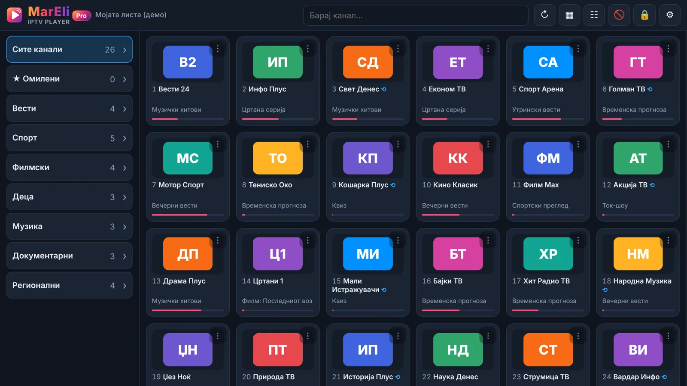
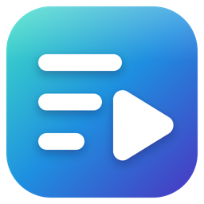
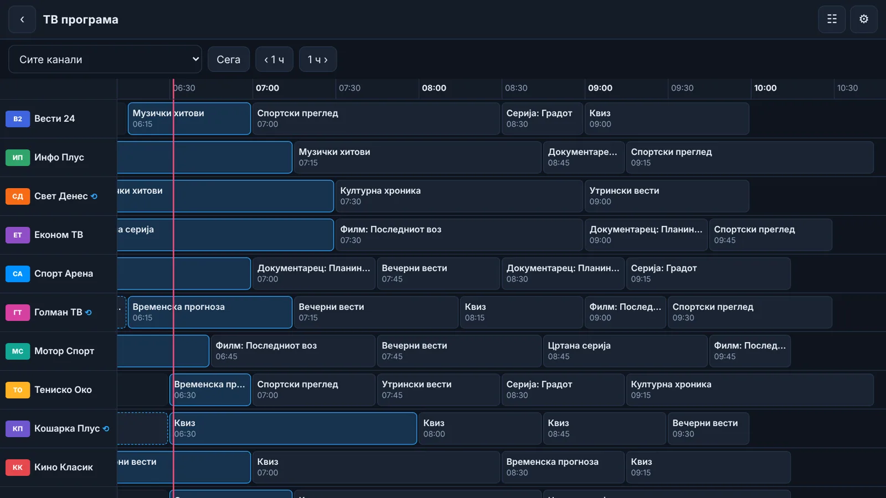
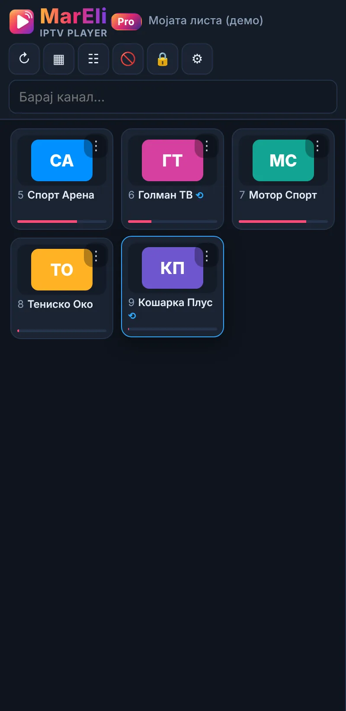
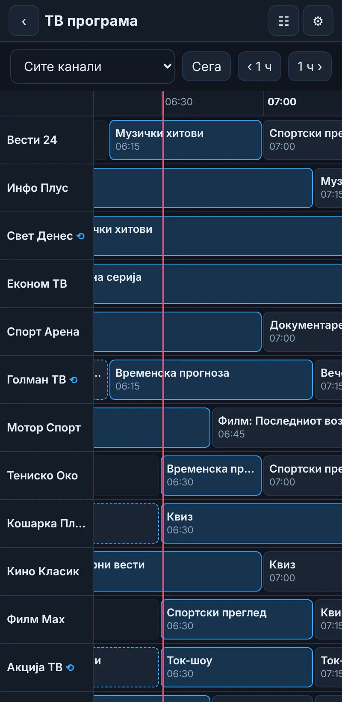
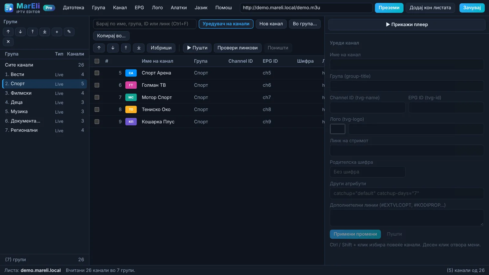
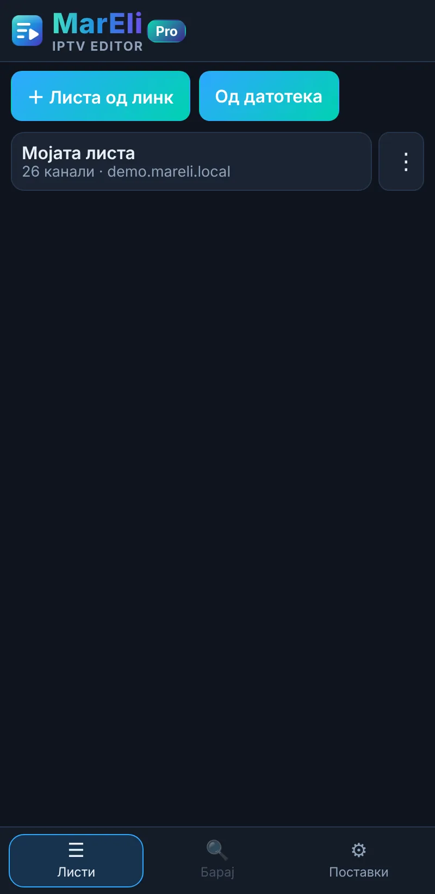
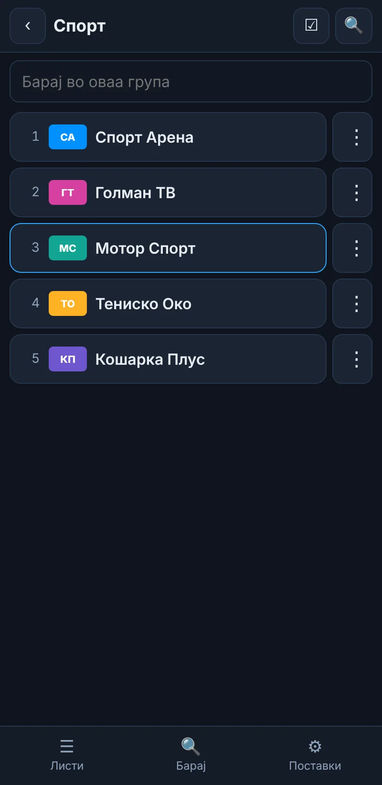

MarEli IPTV Player and MarEli IPTV Editor for Windows, Android phones and Android TV. TV guide, catch-up, movies and series, in 16 languages.

One Pro key works for both apps on Windows, Android phones and Android TV.

Screenshots use a demo playlist with made-up channels.






Try the free version before you buy.
| Free | Pro | |
|---|---|---|
| Live TV, groups, favourites, search | ✓ | ✓ |
| TV guide under the channel, reminders | ✓ | ✓ |
| Hiding and PIN blocking | ✓ | ✓ |
| Number of profiles (playlists) | 1 | ∞ |
| Movies and series | — | ✓ |
| Catch-up | — | ✓ |
| TV guide grid | — | ✓ |
| Advanced Editor tools | — | ✓ |
Always the latest version. The apps then announce every new version by themselves.
Phones and tablets, Android 6 or newer. Open the APK and allow installing from unknown sources.
MarEli IPTV Player MarEli IPTV EditorThe same APK files. On a TV install them with the “Downloader” app (enter the button's link) or from a USB stick.
All files and smaller APKs (arm64 / armeabi-v7a)If Windows shows “Windows protected your PC”: More info → Run anyway.
It works with Xtream Codes logins and standard M3U / M3U8 playlists. Try the free version before buying.
Your personal devices: computer, phone and TV. The key must not be shared or resold.
Write to us. If the problem cannot be solved, we refund within 14 days of purchase.
The apps check for new versions themselves and offer them with one click. Profiles, favourites and the licence are kept.
The guide is inside the apps: Settings → User guide (Editor for Windows: Help → User guide).